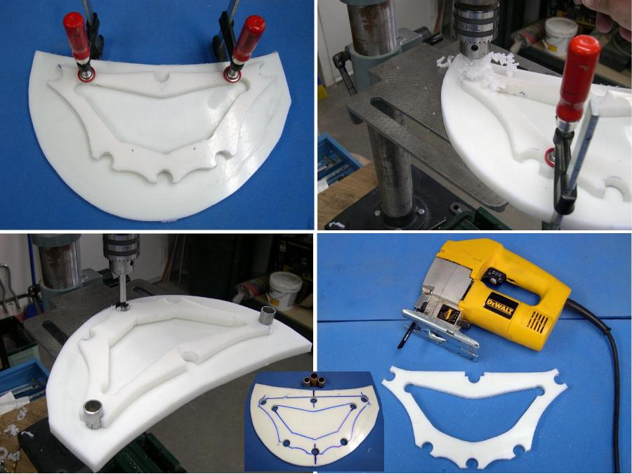

| Frame Maintenance ( 3 of 4) | Menu Last Page Next Page |
|

Replacement Cross Section
To make a replacement cross section, use the old section as a pattern. Clamp the original cross section to a new section of HDPE, and drill with a Forstener bit using the original cutout holes as a guide. 3/4" aluminum tube sections can be used to align the cross sections as the holes are drilled. Use a marker pen to trace out the original cross section shape. Remove the old section, and cut out the new section with a jig saw.. |
|